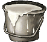

Получено: файл; исходный URL. Оригинальные байты, полученные по ссылке; идентичность архиву не подтверждена.
Белая краска
Мой Мир; историческая таблица, дата редакции не установлена- Тип
- нет данных
- Покупка
- 0 Зб; место покупки не указано
- Продажа
- 3 200 монет
- Как получить
- Приготовить по рецепту В Белом доме
- Применение
- Участвует в строительстве: Башня (нужно очень много) Бизнес-Центр Белый дом
- Особенности
- нет данных
- Версия и дата
- Мой Мир; историческая таблица, дата редакции не установлена


Данные по источнику · Мой Мир · 20.06.2011
Предварительно: один источник; требует сверки. Требуется сверка.
- Покупка
- 0 зомбаксов (по источнику)
- Продажа
- 3 200 монет
- Получение
- Приготовить по рецепту; Белый дом
- Применение
- Башня, бизнес-центр, Белый дом
- Рецепт (Зомбипедия)
- 10 костируз + 12 лилий, 2 часа 50 минут.
- Время варки (ЗомбиСити)
- 170 мин.
- Стоимость ингредиентов (ЗомбиСити)
- 4894 монет
- Цена продажи (ЗомбиСити)
- 3200 монет
- Прибыль (по источнику)
- -1694 монет
Данные по источнику · ВКонтакте, ZOMBIA · 28 Июня 2011, 18:02; дата редакции не установлена
Предварительно: Данные одной исторической фанатской страницы; цифры и подписи изображений требуют сверки. Описание и условия сохранены по колонкам без додумывания.. Требуется сверка.
- Описание материала
- [изображение: Белая краска, зомби ферма, зомби мания] Белая краска 3200 монет 1 Зомбакс
- Участвует в строительстве
- нет текстовых данных; возможны неподписанные изображения
- Как достать
- Приготовить по рецепту Выиграть в Рулетку Выиграть в Рулетку Выиграть в Рулетку Накопать палочками выручалочками в белом заборе в первом подземелье.
- Участвует в создании
- нет текстовых данных; возможны неподписанные изображения
Данные по источнику · браузерная версия; платформа не указана · дата редакции не установлена
Предварительно: Данные исторической таблицы; количество и название прочитаны по значкам и их подписям. Возможны изменения игры и отличия версий.. Требуется сверка.
- Ингредиенты (подписи пиктограмм источника)
- 10 × Урожай костирузы + 12 × Урожай лилий
- Время варки
- 170 минут
- Продажа
- 3200 монет
- Чистая прибыль по определению сайта
- -1694 монет; продажа продукта минус продажа ингредиентов
- Применение (подписи пиктограмм)
- Нужна для модернизации Склепа; Флаг СССР; Нужна для строительства флага России; Нужна для строительства флага Белоруси; Нужна для строительства флага Украины; Башня; Ракета; Бизнес-Центр; Слоник
Данные по источнику · браузерная версия; платформа не указана · дата редакции неизвестна
Предварительно: Подписи и последовательность пиктограмм перенесены без автоматического толкования. Названия, цены и направления стрелок требуют визуальной сверки; возможны ошибки самого сайта.. Требуется сверка.
- Колонка 1 в порядке пиктограмм
- [подпись: Ингредиент белой краски; файл belaya_kraska.png] [подпись: Продажа; файл moneta.png] 3200
- Колонка 2 в порядке пиктограмм
- [значок: proizvoditsya.png] [подпись: Повора; файл povora.png] [подпись: Белый Дом; файл beliy_dom.png]
- Колонка 3 в порядке пиктограмм
- [значок: stroit.png] [подпись: Модернизированный Склеп; файл sklep-modern.png] [подпись: Башня; файл bashnya.png] [подпись: Бизнес-Центр; файл biznes-centr.png] [подпись: Ракета; файл raketa.png] [подпись: Флаг Белоруси; файл flag_belorusy.png] [подпись: Флаг России; файл flag_rossii.png] [подпись: Флаг Украины; файл flag_ukrainy.png] [подпись: Флаг СССР; файл flag_sssr.png] [подпись: Слоник; файл slonik.png]
- Колонка 4 в порядке пиктограмм
- [значок: sosdanie.png]
- Колонка 5 в порядке пиктограмм
- [значок: bonus.png] [подпись: Флаг Зенита; файл flag_zenit.png] [подпись: Флаг Спартака; файл flag_spartak.png] [подпись: Флаг ЦСКА; файл flag_cska.png]
Текст источника без реконструкции
Приготовить по рецепту В Белом доме Участвует в строительстве: Башня (нужно очень много) Бизнес-Центр Белый дом
Связанные сущности
- Школа — упоминается в стадиях или производстве Школы
Источники
- Таблица материалов — zombiemail.do.am; изображения таблицы с zombi.at.ua, авторство текста не установлено
- прочитано; другая версия, сверить; проверка 2026-11-21
- прочитано: зеркало ЗомбиСити; проверка 2026-11-21
- ZOMBIA: прочитана индивидуальная карточка; 28 Июня 2011, 18:02
- Таблица рецептов: прочитана строка и подписи пиктограмм
- Каталог материалов: строка и подписи значков